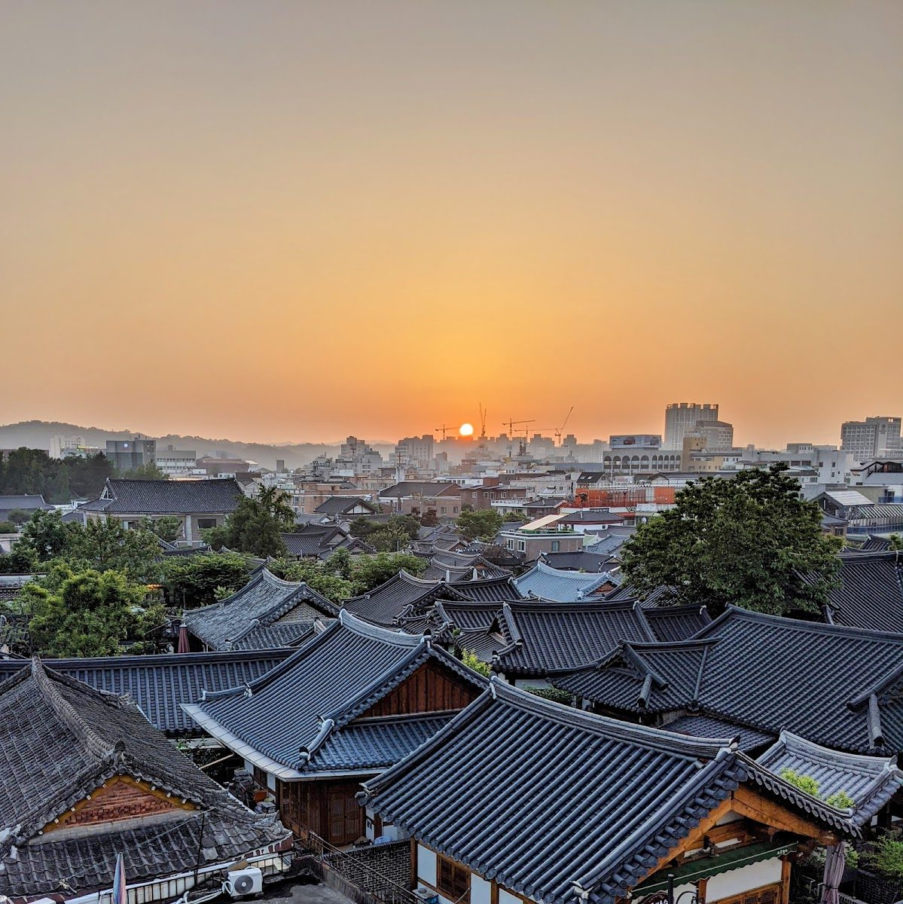

Jeonju · Stay
Lahan Hotel Jeonju: A Stay Beside Hanok Village
By Jungsuk Kim, Korea Plainly · Published · Updated

Photo: Inmook Lee (이인묵) via Google Maps
At a glance: Lahan Hotel Jeonju is a full-service hotel beside Jeonju Hanok Village, making it a handy base for exploring the city’s historic heart.
Visiting Lahan Hotel Jeonju
- Region
- Jeonju
- Address
- 85 Girin-daero, Wansan-gu, Jeonju, Jeonbuk State
- Google rating
- 4.2/5 from 1,409 reviews (October 2026)
Opening hours, prices and closures change. Check the map before you go.
What it is
Lahan Hotel Jeonju is a relaxed city hotel at 85 Girin-daero in Wansan-gu, right beside Jeonju Hanok Village. Its location is the main advantage: you can stay close to the traditional streets and sights, then return to a modern hotel for a break. It suits first-time visitors who want to explore on foot without giving up familiar hotel comforts.
The hotel has casual rooms, a restaurant, a bar, a gym and a spa. A swimming pool is also among its facilities, and some rooms offer views toward the hanok rooftops. The overall feel is more easy-going than formal, making it a practical choice for couples, families and anyone planning a sightseeing-focused stay. Lahan Hotel Jeonju has a Google rating of 4.2 from 1,409 reviews.
Jeonju’s historic centre is especially enjoyable when you can explore at an unhurried pace. Staying nearby lets you visit the village in the morning or evening, when you can take a quieter walk, as well as during the busier middle of the day.
What to see and do nearby
Start with Jeonju Hanok Village, a large historic district of traditional Korean houses, narrow lanes, craft shops and places to eat. The village is popular with visitors, but it is also a neighbourhood, so keep noise down in residential lanes and take care not to enter private homes or courtyards. You’ll find plenty of spots for photos; be considerate when other visitors or residents are nearby.
For a closer look at the city’s history, visit Gyeonggijeon Shrine, known for its historic buildings and peaceful grounds. Omokdae, a hilltop pavilion area, offers a change of pace and views over the village roofs. These sights fit naturally into a day of walking: wander the lanes, stop for a meal, then take in a shrine or viewpoint before heading back to the hotel.
Jeonju is also famous for its food, so make room in your plans for a meal in or around the village. You can try local dishes at the many restaurants nearby, or keep things simple at the hotel’s restaurant. For a quieter end to the evening, the hotel bar offers a place to unwind without heading back into the busy streets.
If you’re staying with children or want a rest between outings, make time for the hotel’s leisure facilities. The pool, gym and spa can give your day a slower rhythm, especially after several hours on foot. Check the hotel’s current facility details before building your plans around a particular amenity.
How to plan your stay
Think of Lahan as a base for a full day or more in Jeonju rather than a stop that needs only a quick visit. One night can work for a compact trip focused on the village, while a longer stay gives you time to explore at a relaxed pace, enjoy the hotel facilities and fit in additional parts of the city.
Start sightseeing in the morning if you prefer quieter lanes and cooler weather, particularly in warmer months. Midday is a good time to take a break for lunch or return to the hotel; later, head out again for another walk through the village. The streets have a different feel as the day winds down, though popular areas can remain lively.
Pair the hotel with a walking itinerary through Hanok Village, Gyeonggijeon and Omokdae. Wear comfortable shoes: the best way to explore the historic district is on foot, and you may find yourself taking a few extra turns down side streets. If you have luggage or plan to visit other parts of Jeonju, arrange your transport around your arrival and departure rather than assuming every journey will be a walk.
Before booking, consider what matters most to you. The hotel’s position is especially convenient for the village, while its restaurant, bar and leisure facilities offer options when you want downtime. If you’re visiting during a busy holiday period, planning ahead can help you make the most of a popular destination.
Good to know
The address is 85 Girin-daero, Wansan-gu, Jeonju, Jeonbuk State. Use the full hotel name when entering your destination in a map app, and check the route from your station or bus stop before setting out. Jeonju’s historic streets are easy to explore once you arrive, but carrying luggage through a sightseeing area is less convenient than going directly to the hotel first.
Facility access and operating details can vary, so check the hotel’s official website before your stay if the pool, spa or gym is important to your plans. For current hours or prices at nearby attractions, check Naver Map.
FAQ
Is Lahan Hotel Jeonju close to Jeonju Hanok Village?
Yes. The hotel is beside Jeonju Hanok Village, making it a convenient base for exploring the historic district and nearby sights.
What facilities does the hotel have?
The hotel has a restaurant, bar, gym and spa, as well as a swimming pool. Check the official website for current facility details before your visit.
What can I visit near the hotel?
Jeonju Hanok Village is next door. Gyeonggijeon Shrine and Omokdae are also good additions to a walking day in the area.